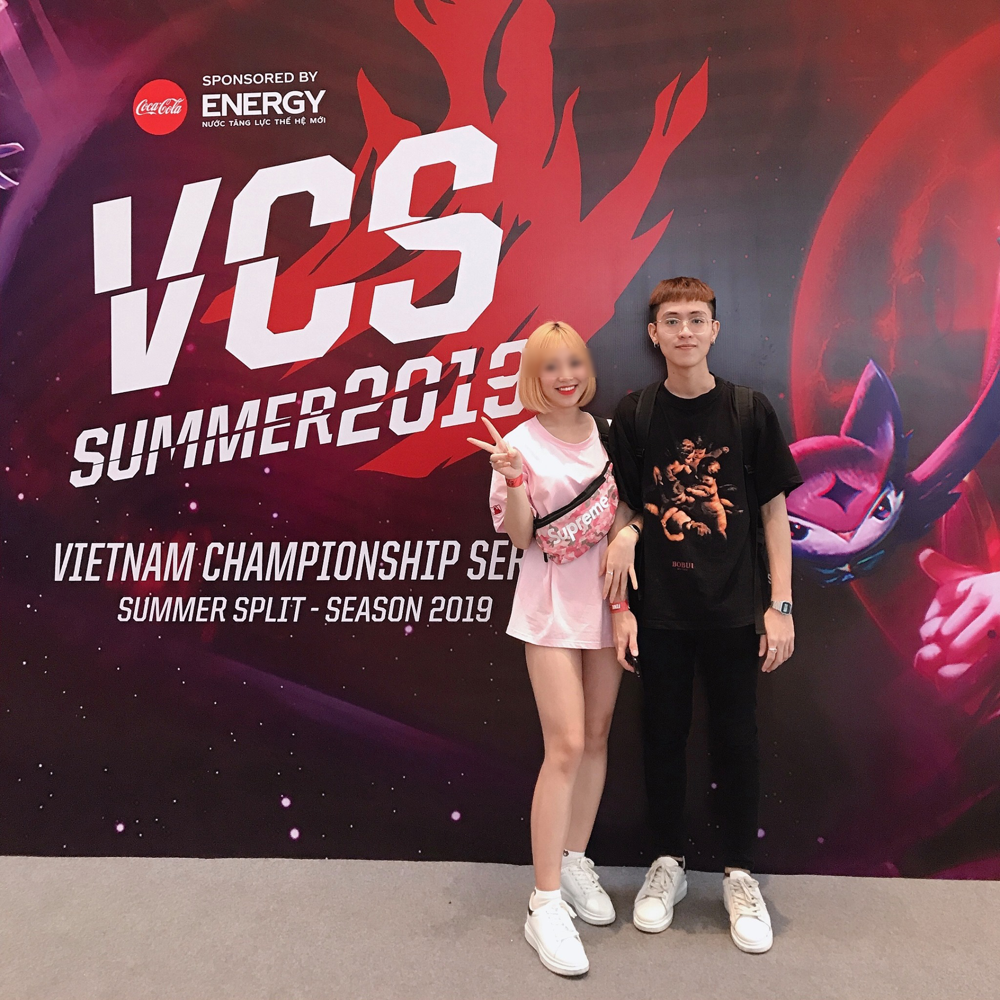

Nóng: Streamer Hà Tiều Phu tự phanh phui
nghi vấn bị "cắm sừng", cộng đồng game Việt "dậy sóng"
Mạnh Đức,theo trí thức trẻ 18:00 30/11/2020
LMHT lại gặp sóng gió trong tình yêu. Điềm báo từ trước khiến không ít
người rùng mình.
Hà Tiều Phu là 1 trong những cái tên nổi tiếng trong làng stream Việt. Anh sở hữu kỹ năng
thượng thừa cùng vị tướng Olaf. Anh có không ít những màn highlight đáng trầm trồ. Bên
cạnh đó, chuyện tình giữa chàng trai và nữ streamer H.T.H cũng khiến cộng đồng mạng yêu
thích khi chẳng cần mai mối, cặp đôi đã trúng tiếng sét ái tình ngay từ giây phút đầu tiên.
- 
Theo đó, sau thời gian dài yêu xa, Hà Tiều Phu đã đón H.T.H vào Sài Gòn. Điều này khiến
fan mong ngóng về "happy ending" cho cặp đôi.
Tuy nhiên, theo dòng trạng thái mới nhất trên trang cá nhân của Hà Tiều Phu, "chuyến tàu
tình yêu" của cặp đôi có vẻ như đã lăn đến sân ga cuối cùng khi có sự xuất hiện không chỉ của
người thứ 3 mà còn là người thứ 4, thứ 5.
Cụ thể, Hà Tiều Phu đã lên tiếng với những dòng chia sẻ rất bức xúc về chuyện "bị cắm
sừng" khiến không ít bạn bè hoang mang và liên tục để lại các bình luận an ủi và xoa dịu.
Vốn được biết đến là người có tính cách rụt rè, hiền lành, phản ứng mạnh mẽ của Hà Tiều
Phu khiến không ít người nghĩ rằng chuyện tình của cặp đôi đã chính thức "toang".
Chàng streamer trong các bình luận phản hồi của bạn bè đã không ngừng khẳng định tình
cảm đầy chân thành mình dành cho đối phương trong suốt 2 năm bên nhau. Anh đưa ra rất nhiều
dẫn chứng từ việc yêu thương, chiều chuộng cô nàng hết mực đến việc rất cẩn thận và cân nhắc
cho những hành động nhỏ nhất như like ảnh người khác giới hay nhắc đến tên người yêu với
sự tôn trọng. Anh cũng bày tỏ sự thất vọng rất lớn cũng như bản thân đã chịu đựng trong suốt
1 tuần qua trước khi bùng nổ cảm xúc như hiện tại.